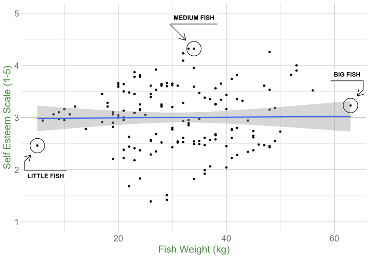
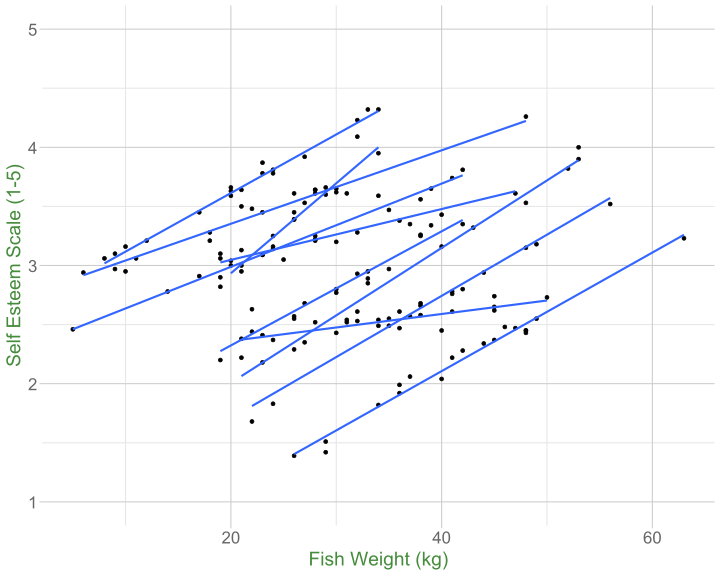

Assumptions, Diagnostics, and Centering
Data Analysis for Psychology in R 3
Josiah King
Psychology, PPLS
University of Edinburgh
Course Overview
|
multilevel modelling working with group structured data |
regression refresher |
| the multilevel model | |
| more complex groupings | |
| centering, assumptions, and diagnostics | |
| recap | |
|
factor analysis working with multi-item measures |
measurement and dimensionality |
| exploring underlying constructs (EFA) | |
| testing theoretical models (CFA) | |
| reliability and validity | |
| recap & exam prep |
This week
- Assumptions of multilevel models
- some suggestions when things look awry
- Case Diagnostics
- what if results are dependent on a small set of influential observations/clusters?
- Centering predictors in multilevel models
- what does “changing 1 in x” actually mean?
Assumptions
Assumptions in LM
The general idea
- \(\varepsilon_i \sim N(0,\sigma^2)\) iid
- “zero mean and constant variance”
Recipe book
- Linearity
- Independence
- Normality
- Equal Variances
What’s different in MLM?
Answer: Not much!
General idea is unchanged: error is random
But we now have residuals at multiple levels! Random effects can be viewed as residuals at another level.
Resids
Resids (2)
Resids (3)
Random effects as level 2 residuals
Random effects as level 2 residuals
Random effects as level 2 residuals
\[ \begin{align} & \text{for observation }j\text{ in group }i \\ \quad \\ & \text{Level 1:} \\ & \color{red}{y_{ij}} = \color{blue}{b_{0i} \cdot 1 + b_{1i} \cdot x_{ij}} + \varepsilon_{ij} \\ & \quad \\ & \text{Level 2:} \\ & \color{blue}{b_{0i}} = \gamma_{00} + \color{orange}{\zeta_{0i}} \\ & \color{blue}{b_{1i}} = \gamma_{10} + \color{orange}{\zeta_{1i}} \\ & \qquad \\ & \begin{bmatrix} \color{orange}{\zeta_{0i}} \\ \color{orange}{\zeta_{1i}} \end{bmatrix} \sim N \left( \begin{bmatrix} 0 \\ 0 \end{bmatrix}, \begin{bmatrix} \color{orange}{\sigma_0} & \color{orange}{\rho_{01}} \\ \color{orange}{\rho_{01}} & \color{orange}{\sigma_1} \end{bmatrix} \right) \\ & \varepsilon_{ij} \sim N(0,\sigma_\varepsilon) \\ \end{align} \]
Random effects as level 2 residuals
\(\varepsilon\)
resid(model)
zero mean, constant variance
\(\color{orange}{\zeta}\)
ranef(model)
zero mean, constant variance
$clusterAssumption Plots: Residuals vs Fitted
Assumption Plots: qqplots
Assumption Plots: Scale-Location
Assumption Plots: Scale-Location
Assumption Plots: Ranefs
base
“posterior” predictions
!?!?!?!
Assumptions are not either “violated” or “not violated”.
Assumptions are the things we assume when ‘using’ a model.
- the question is whether we (given our plots etc) are happy to assume these things
Troubleshooting
Same old study
In a study examining how cognition changes over time, a sample of 20 participants took the Addenbrooke’s Cognitive Examination (ACE) every 2 years from age 60 to age 78.
Each participant has 10 datapoints. Participants are clusters.
# A tibble: 6 × 7
sitename ppt condition visit age ACE imp
<chr> <chr> <chr> <dbl> <dbl> <dbl> <chr>
1 Sncbk PPT_1 control 1 60 84.5 unimp
2 Sncbk PPT_1 control 2 62 85.6 imp
3 Sncbk PPT_1 control 3 64 84.5 imp
4 Sncbk PPT_1 control 4 66 83.1 imp
5 Sncbk PPT_1 control 5 68 82.3 imp
6 Sncbk PPT_1 control 6 70 83.3 imp Model mis-specification
Model mis-specification
Modelling a different form of relation
Transformations
Transforming your outcome variable may result in a model with better looking assumption plots
- log(y)
- 1/y
- sqrt(y)
- forecast::BoxCox(y)
Modelling a different form of relation
Transformations
- Transforming your outcome variable may result in a model with better looking assumption plots
Modelling a different form of relation
Transformations?
- Transforming will often come at the expense of interpretability.
Making fewer assumptions?
Bootstrap?
basic idea:
- do many many times:
 a. take a sample (e.g. sample with replacement from your data, or simulated from your model parameters)
 b. fit the model to the sample
- then:
 a. based on all the models fitted in step 1, obtain a distribution of parameter estimate of interest.
 b. based on the bootstrap distribution from 2a, compute a confidence interval for estimate.
 c. celebrate
Making fewer assumptions?
Bootstrapping is not a panacea.
If we’re worrying because our errors are a little non-normal or heteroskedastic, and if we have a large sample size, then bootstrapping can let us relax these assumptions.
üí© The ‚Äúgarbage in garbage out‚Äù principle always applies
- unrepresentative samples and misspecified models aren’t made any better by bootstrapping.
Bootstrap: What do we (re)sample?
- resample based on the estimated distributions of parameters?
- explanatory variables fixed
- model specification
- distributions (e.g. \(\zeta \sim N(0,\sigma_{\zeta}),\,\, \varepsilon \sim N(0,\sigma_{\varepsilon})\))
- resample residuals
- explanatory variables fixed
- model specification
- resample cases
- model specification
- But do we resample observations? clusters? both?
- model specification
Case Bootstrap
NOT IMPLEMENTED FOR CROSSED STRUCTURES
# A tibble: 4 × 6
term estimate lower upper type level
<chr> <dbl> <dbl> <dbl> <chr> <dbl>
1 (Intercept) 85.7 85.5 86.0 perc 0.95
2 visit -0.532 -0.666 -0.390 perc 0.95
3 conditionmindfulness -0.298 -0.650 0.0736 perc 0.95
4 visit:conditionmindfulness 0.346 0.151 0.555 perc 0.95For a discussion of different bootstrap methods for multilevel models, see Leeden R.., Meijer E., Busing F.M. (2008) Resampling Multilevel Models. In: Leeuw J.., Meijer E. (eds) Handbook of Multilevel Analysis. Springer, New York, NY. DOI: 10.1007/978-0-387-73186-5_11

Case Diagnostics
Influence
Just like standard lm(), observations can have unduly high influence on our model through a combination of high leverage and outlyingness.

but we have multiple levels…
Both observations (level 1 units) and clusters (level 2+ units) can be influential.
several packages, but current recommendations are HLMdiag and influence.ME.
Level 1 influential points
[1] "id" "ACE" "visit" "condition"
[5] "ppt" "cooksd" "mdffits" "covtrace"
[9] "covratio" "leverage.overall"# A tibble: 177 × 10
id ACE visit condition ppt cooksd mdffits covtrace covratio
<int> <dbl> <dbl> <fct> <fct> <dbl> <dbl> <dbl> <dbl>
1 1 84.5 1 control PPT_1 0.0119 0.0116 0.0221 1.02
2 2 85.6 2 control PPT_1 0.0164 0.0162 0.0145 1.01
3 3 84.5 3 control PPT_1 0.00158 0.00156 0.00901 1.01
4 4 83.1 4 control PPT_1 0.00138 0.00137 0.00508 1.01
5 5 82.3 5 control PPT_1 0.00160 0.00159 0.00239 1.00
6 6 83.3 6 control PPT_1 0.000482 0.000482 0.000765 1.00
7 7 80.9 7 control PPT_1 0.000227 0.000227 0.000150 1.00
8 8 81.9 8 control PPT_1 0.000112 0.000112 0.000619 1.00
9 9 81.5 9 control PPT_1 0.000804 0.000802 0.00239 1.00
10 10 80.4 10 control PPT_1 0.0000561 0.0000558 0.00595 1.01
# ℹ 167 more rows
# ℹ 1 more variable: leverage.overall <dbl>Level 1 influential points
Level 2 influential clusters
The process will depend on the design
In this context (observations within participants) - it makes sense to think about level-2 (participant) first.
It’s worth looking into PPT_2 a bit further.
# A tibble: 6 × 6
ppt cooksd mdffits covtrace covratio leverage.overall
<fct> <dbl> <dbl> <dbl> <dbl> <dbl>
1 PPT_2 0.213 0.190 0.235 1.25 0.158
2 PPT_18 0.150 0.134 0.229 1.24 0.158
3 PPT_19 0.102 0.0918 0.229 1.24 0.158
4 PPT_5 0.0858 0.0771 0.235 1.25 0.158
5 PPT_13 0.0811 0.0727 0.229 1.24 0.158
6 PPT_3 0.0747 0.0670 0.235 1.25 0.158# A tibble: 6 × 6
ppt cooksd mdffits covtrace covratio leverage.overall
<fct> <dbl> <dbl> <dbl> <dbl> <dbl>
1 PPT_2 0.213 0.190 0.235 1.25 0.158
2 PPT_18 0.150 0.134 0.229 1.24 0.158
3 PPT_19 0.102 0.0918 0.229 1.24 0.158
4 PPT_5 0.0858 0.0771 0.235 1.25 0.158
5 PPT_13 0.0811 0.0727 0.229 1.24 0.158
6 PPT_3 0.0747 0.0670 0.235 1.25 0.158mdffitsis a measure of multivariate “difference in fixed effects”
Sensitivity Analysis?
“What would happen to my conclusions & estimates if I …”
mymodel <-
lmer(ACE ~ visit * condition +
(1 + visit | ppt),
data = d3)
summary(mymodel, corr=FALSE)Linear mixed model fit by REML ['lmerMod']
Formula: ACE ~ visit * condition + (1 + visit | ppt)
Data: d3
REML criterion at convergence: 362
Scaled residuals:
Min 1Q Median 3Q Max
-2.296 -0.686 -0.041 0.686 2.420
Random effects:
Groups Name Variance Std.Dev. Corr
ppt (Intercept) 0.1467 0.383
visit 0.0769 0.277 -0.49
Residual 0.2445 0.495
Number of obs: 177, groups: ppt, 20
Fixed effects:
Estimate Std. Error t value
(Intercept) 85.7353 0.1688 507.79
visit -0.5319 0.0897 -5.93
conditionmindfulness -0.2979 0.2362 -1.26
visit:conditionmindfulness 0.3459 0.1269 2.73mymodel_rm2 <-
lmer(ACE ~ visit * condition +
(1 + visit | ppt),
data = d3 |> filter(!ppt %in% c("PPT_2")))
summary(mymodel_rm2, corr=FALSE)Linear mixed model fit by REML ['lmerMod']
Formula: ACE ~ visit * condition + (1 + visit | ppt)
Data: filter(d3, !ppt %in% c("PPT_2"))
REML criterion at convergence: 341
Scaled residuals:
Min 1Q Median 3Q Max
-2.2678 -0.6644 0.0145 0.6289 2.6904
Random effects:
Groups Name Variance Std.Dev. Corr
ppt (Intercept) 0.0715 0.267
visit 0.0804 0.284 -0.76
Residual 0.2557 0.506
Number of obs: 167, groups: ppt, 19
Fixed effects:
Estimate Std. Error t value
(Intercept) 85.8735 0.1537 558.54
visit -0.5251 0.0966 -5.44
conditionmindfulness -0.4394 0.2094 -2.10
visit:conditionmindfulness 0.3394 0.1332 2.55Interim Summary
Our assumptions for multilevel models are similar to the standard linear model - it’s about our residuals
- random effects are another level of residual
“Influence” on models is exerted by both observations and clusters
Use plots and diagnostics to prod and probe your model.
first course of action should always be to THINK (i.e., about model specification)
- only then (if desired) consider things like transformations, bootstrap etc.
If in doubt, consider a sensitivity analysis: how do your conclusions change depending upon decisions you have made.
Centering
Centering
Suppose we have a variable for which the mean is 100.

We can re-center this so that 100 (the mean) becomes zero:
Centering
Suppose we have a variable for which the mean is 100.

We can re-center this so that any value becomes zero:
Scaling
Suppose we have a variable for which the mean is 100. The standard deviation is 15
We can scale this so that a change in 1 is equivalent to a change in 1 standard deviation:
Centering predictors in LM
Big Fish Little Fish
Big Fish Little Fish
data available at https://uoepsy.github.io/data/bflp.csv
Things are different with multi-level data
Multiple means
Grand mean
Group means
Group-mean centering
Group-mean centering
\(x_{ij} - \bar{x}_i\)
\(\bar{x}_i\)
Disaggregating within & between
RE model
\[
\begin{align}
y_{ij} &= b_{0i} + b_{1}(x_j) + \varepsilon_{ij} \\
b_{0i} &= \gamma_{00} + \zeta_{0i} \\
... \\
\end{align}
\]
Within-between model
\[
\begin{align}
y_{ij} &= b_{0i} + b_{1}(\bar{x}_i) + b_2(x_{ij} - \bar{x}_i)+ \varepsilon_{ij} \\
b_{0i} &= \gamma_{00} + \zeta_{0i} \\
... \\
\end{align}
\]
bflp <-
bflp |> group_by(pond) |>
mutate(
fw_between_pond = mean(fish_weight),
fw_within_pond = fish_weight - mean(fish_weight)
) |> ungroup()
mod_wb <- lmer(self_esteem ~ fw_between_pond + fw_within_pond +
(1 | pond), data=bflp)
fixef(mod_wb) (Intercept) fw_between_pond fw_within_pond
4.7680 -0.0559 0.0407 Disaggregating within & between

Within-between model
\[
\begin{align}
y_{ij} &= b_{0i} + b_{1}(\bar{x}_i) + b_2(x_{ij} - \bar{x}_i)+ \varepsilon_{ij} \\
b_{0i} &= \gamma_{00} + \zeta_{0i} \\
... \\
\end{align}
\]
bflp <-
bflp |> group_by(pond) |>
mutate(
fw_between_pond = mean(fish_weight),
fw_within_pond = fish_weight - mean(fish_weight)
) |> ungroup()
mod_wb <- lmer(self_esteem ~ fw_between_pond + fw_within_pond +
(1 | pond), data=bflp)
fixef(mod_wb) (Intercept) fw_between_pond fw_within_pond
4.7680 -0.0559 0.0407 A more realistic example
A research study investigates how anxiety is associated with drinking habits. Data was collected from 50 participants. Researchers administered the generalised anxiety disorder (GAD-7) questionnaire to measure levels of anxiety over the past week, and collected information on the units of alcohol participants had consumed within the week. Each participant was observed on 10 different occasions.
data available at https://uoepsy.github.io/data/lmm_alcgad.csv
A more realistic example
The Within Question
Is being more anxious (than you usually are) associated with higher consumption of alcohol?
A more realistic example
The Between Question
Is being generally more anxious (relative to others) associated with higher consumption of alcohol?
Modelling within & between effects
Linear mixed model fit by REML ['lmerMod']
Formula: alcunits ~ gad_between + gad_within + (1 + gad_within | ppt)
Data: alcgad
REML criterion at convergence: 1424
Scaled residuals:
Min 1Q Median 3Q Max
-2.8466 -0.6264 0.0642 0.6292 3.0281
Random effects:
Groups Name Variance Std.Dev. Corr
ppt (Intercept) 3.7803 1.944
gad_within 0.0935 0.306 -0.30
Residual 1.7234 1.313
Number of obs: 375, groups: ppt, 50
Fixed effects:
Estimate Std. Error t value
(Intercept) 14.5802 0.8641 16.87
gad_between -0.7584 0.1031 -7.35
gad_within 0.6378 0.0955 6.68
Correlation of Fixed Effects:
(Intr) gd_btw
gad_between -0.945
gad_within -0.055 0.012within? between? a bit of both?
Linear mixed model fit by REML ['lmerMod']
Formula: alcunits ~ gad + (1 + gad | ppt)
Data: alcgad
REML criterion at convergence: 1492
Scaled residuals:
Min 1Q Median 3Q Max
-2.9619 -0.6412 0.0227 0.5956 3.0251
Random effects:
Groups Name Variance Std.Dev. Corr
ppt (Intercept) 15.1205 3.889
gad 0.0751 0.274 -0.37
Residual 1.7750 1.332
Number of obs: 375, groups: ppt, 50
Fixed effects:
Estimate Std. Error t value
(Intercept) 5.3937 0.8361 6.45
gad 0.4176 0.0877 4.76
Correlation of Fixed Effects:
(Intr)
gad -0.772Within & Between effects

Within & Between effects
Modelling within & between interactions
Linear mixed model fit by REML ['lmerMod']
Formula: alcunits ~ intervention * (gad_between + gad_within) + (1 | ppt)
Data: alcgad
REML criterion at convergence: 1404
Scaled residuals:
Min 1Q Median 3Q Max
-2.8183 -0.6354 0.0142 0.5928 3.0874
Random effects:
Groups Name Variance Std.Dev.
ppt (Intercept) 3.59 1.9
Residual 1.69 1.3
Number of obs: 375, groups: ppt, 50
Fixed effects:
Estimate Std. Error t value
(Intercept) 14.858 1.275 11.65
intervention -0.549 1.711 -0.32
gad_between -0.876 0.154 -5.70
gad_within 1.092 0.128 8.56
intervention:gad_between 0.205 0.205 1.00
intervention:gad_within -0.757 0.166 -4.57When does it matter?
When we have a predictor \(x\) that varies within a cluster
and
When clusters have different average levels of \(x\). This typically only happens when \(x\) is observed (as opposed to when it is manipulated as part of an experiment)
and
When our question concerns \(x\). (if \(x\) is just a covariate, no need).
Summary
Applying the same linear transformation to a predictor (e.g. grand-mean centering, or standardising) makes no difference to our model or significance tests
- it changes what we “get out” (i.e. intercept changes place, slopes change units).
When data are clustered, we can apply group-level transformations, e.g. group-mean centering.
Group-mean centering our predictors allows us to disaggregate within from between effects.
- allowing us to ask the theoretical questions that we are actually interested in
This week
Tasks
 Complete readings
Complete readings
 Attend your lab and work together on the exercises
Attend your lab and work together on the exercises
 Complete the weekly quiz
Complete the weekly quiz
Support
 Piazza forum!
Piazza forum!
 Office hours (see Learn page for details)
Office hours (see Learn page for details)